RESUME
EDUCATION
- Bachelor’s Degree in Computer Science (2015 - 2019).
Unidad Profesional Interdisciplinaria de Ingeniería y Ciencias Sociales y Administrativas
(UPIICSA-IPN).
KNOWLEDGE & SKILLS
- Object-Oriented Programming
- Mobile Application Development
- UX / UI Design
- Web Development
- Mobile Game Development
TOOLS & TECHNOLOGIES
- Programming Languages
Java (Intermediate), C# (Intermediate), C++ (Intermediate), PHP (Basic),
HTML5 (Intermediate), JavaScript (Intermediate), Visual Basic (Intermediate).
- Relational Databases
SQL Server (Intermediate), MySQL (Basic), SQLite (Intermediate), Firebase (Advanced).
- Development Environments
Android Studio (Intermediate), Visual Studio (Intermediate), Unity (Intermediate),
Eclipse (Intermediate), NeatBeans (Intermediate), Spark AR Studio (Advanced).
- Use of Repository (GitHub, GitLab, GitKraken).
- Microsoft Office (Advanced).
- Adobe Creative Cloud (Intermediate).
EXPERIENCE
Rapptr Std.
- UX / UI Designer (2018 - 2019).
Mobile application design.
User Testing and user research.
Maintenance and optimization of mobile applications.
- Project Manager (2020).
Responsible for the visual design of projects.
Follow up and ensure the fulfillment of projects.
Prepare internal and external progress reports.
Generate lines of communication with the different areas in order for the information to flow.
TRAINING
- Cloud Computing (Escuela de Organización Industrial - Google Activate).
- Mobile Apps Development (Universidad Complutence de Madrid - Google Activate).
- E-Commerce (Escuela de Organización Industrial - Google Activate).
LANGUAGES
CONTACT
DOWNLOAD RESUME
APPS
IPNet
The social network thought for the student community!
Find friends, upload your best photos, send messages and ask your questions to the whole student community.
SEE MORE
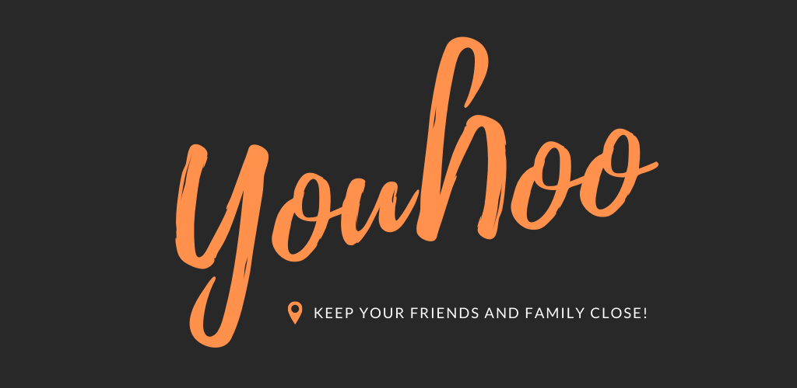
YOUHOO
Keep your friends and family close and safe!
Follow your contacts at all times with this application that lets you know their location at all time!
SEE MORE
Corona Now
Stay protected and informed with corona now!
Real-time update of the status of the pandemic around the world!
SEE MORE
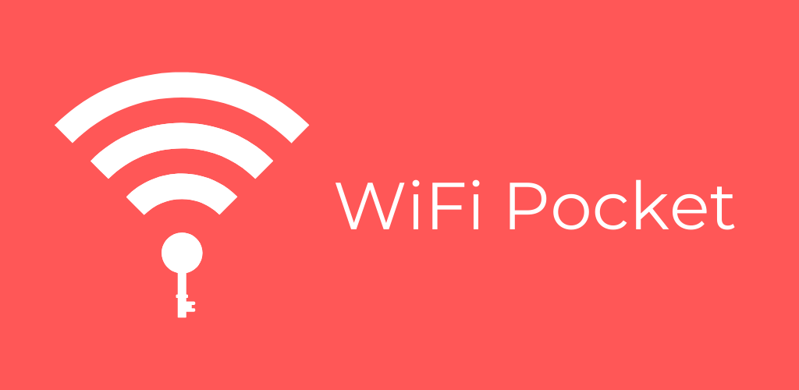
WIFI POCKET
All your wifi passwords in one place!
Save and share your passwords easily, with wifi pocket save and share all your wifi passwords with your friends.
SEE MORE
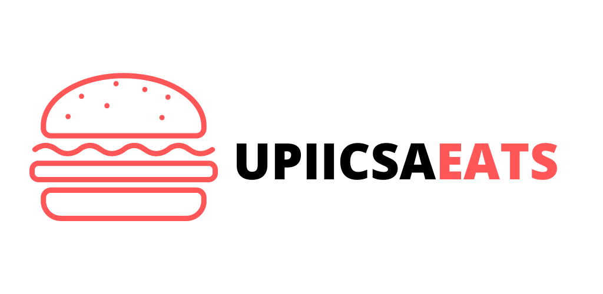
UPIICSA Eats
Do you have no free time or don't have time to buy something to eat and you have 5 hours in a classroom?
Do not worry, from the comfort of your seat in the classroom you will be able to ask for anything you need and it will come to the door of your classroom in a little time!
SEE MORE
UPIICSAnswers
Asking is wise.
With upiicanswers you can clarify all your doubts that will be answered by students of the upiicsa student community.
SEE MORE
Minimal Classtool
Everything you need to be productive in the classroom and out!
Classtool is a tool designed to facilitate work to the students they will be able to have their schedule, add reminders, teacher information, exam and task reminders, etc.
SEE MORE
QReader +
Generate qr codes of everything you want in an easy and quick way with this app!
QReader + allows you to read qr codes and also allows you to generate them with a very easy and intuitiful to use interface.
SEE MORE

STLKR
Download states, profile photos, and publications anonymously!
STLKR is the simple tool that will help you download the profile photo of any user of instagram, and download all the states from your contacts, download instagram post, everything anonymous, easy and secure!
SEE MORE
GAMES
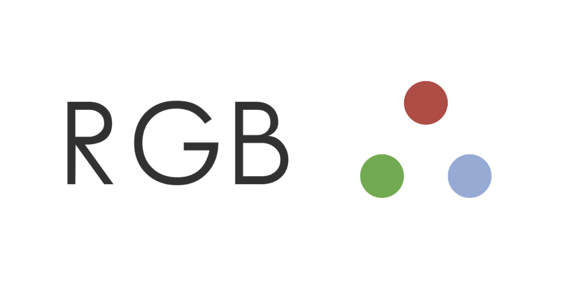
RGB
Catch all the points according to their color while each time their speed increases!
Test your mental agility catching all the points that are going down faster and faster!
SEE MORE
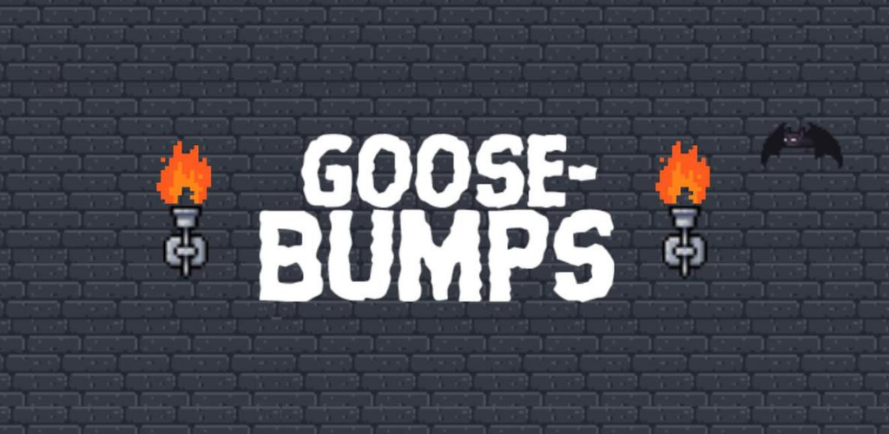
GooseBumps
Are you afraid of ghosts? In this game you are one!
Watch out for bats, don't float too low or too high or you could lose!
SEE MORE
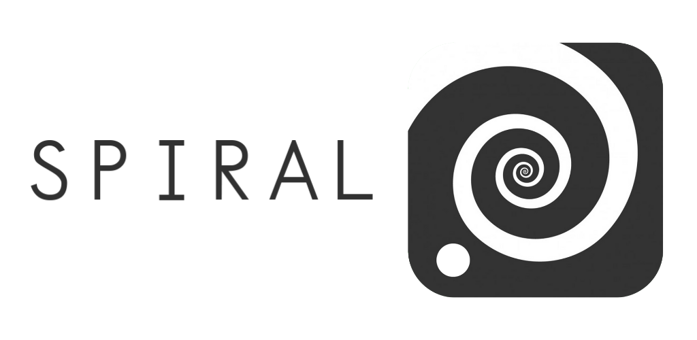
SPIRAL
How fast are you mentally?
Try not to get dizzy and lose your mind in the new game of mental agility!
SEE MORE
DUAL
How fast are your reflexes?
Put them to pass without losing concentration in this fun game!
SEE MORE
BOARDS
How far down can you go without losing focus in this new game of mental agility?
SEE MORE
NON STOP UP
How far can you go in Non Stop Up?
The classic game of climbing platforms, now in reverse!
SEE MORE
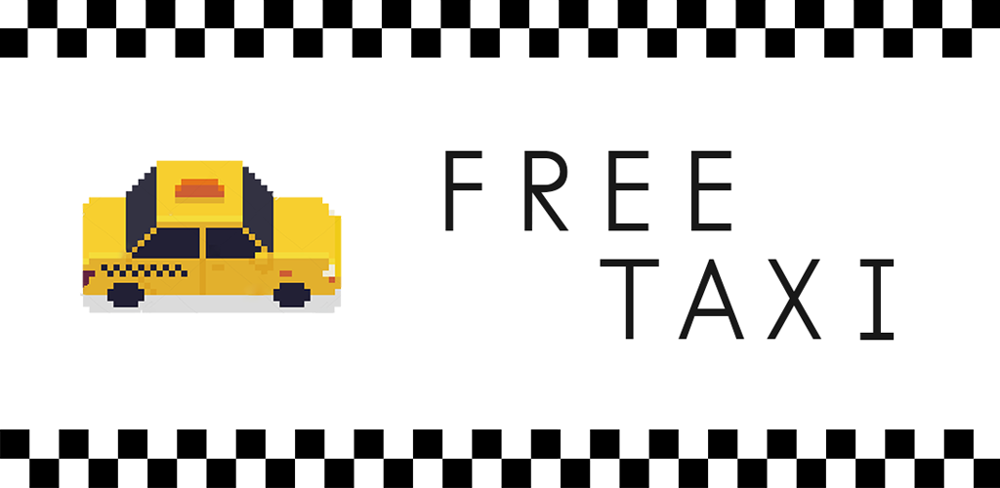
FREE TAXI
How fast are your reflexes? Put them to the test aboard this taxi!
Will you be fast enough to collect as many coins as possible without crashing in the road?
SEE MORE
AR EFFECTS
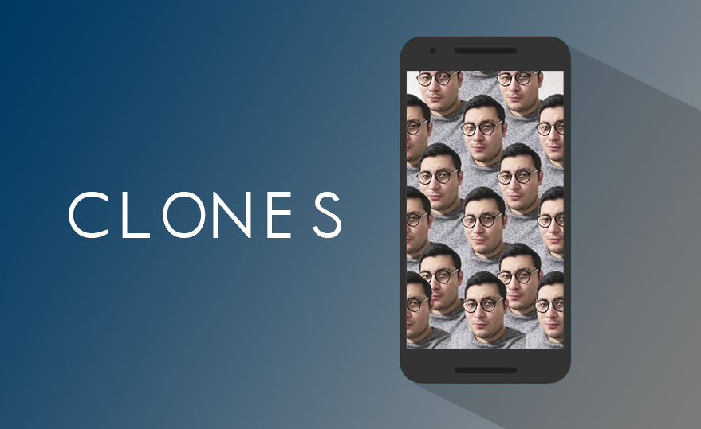
CLONES
With this filter the user can capture videos in which it is multiplied by 16 and
gives the effect that it was an army of clones.
TRY IT
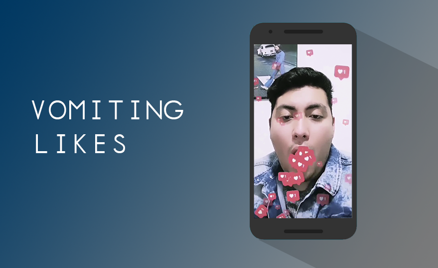
VOMITING LIKES
With this filter, through the use of floating particles, the user will be able to
record videos in which when opening their mouths, icons of hearts will appear, just as they will
be floating on the screen of the device.
TRY IT
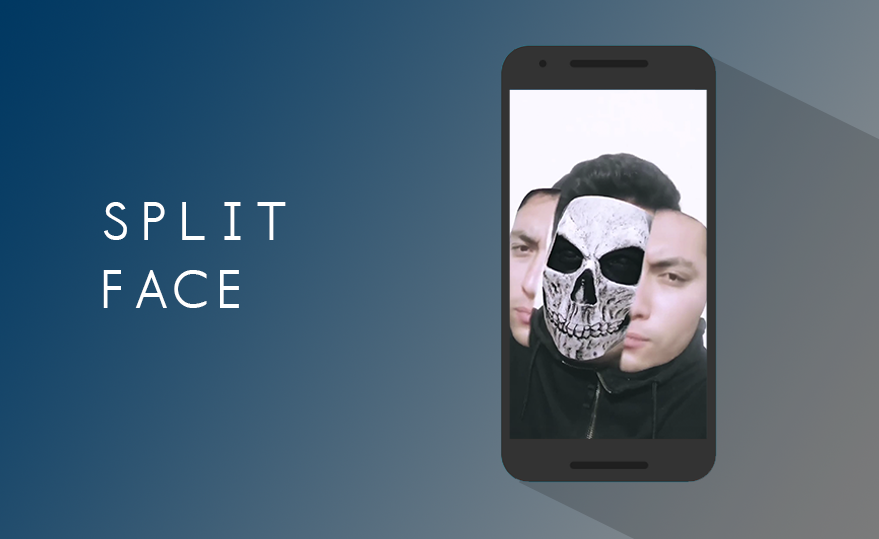
SPLIT FACE
With this effect, through the facetracker, the user will be able to record videos in
which when raising the eyebrows, the user's face will divide and show a terrifying skull.
TRY IT
FOUR EYES
With this filter, and using the facetracker, the user can record videos in which he is seen
with four eyes instead of two. A clear example of how with the facetracker, you can place any object, either
2D or 3D, on the user's face.
TRY IT
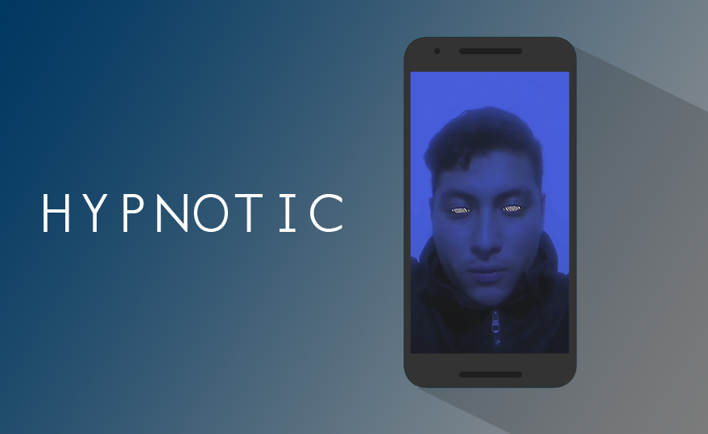
HYPNOTIC
With this filter, and making use of facetracker and external layouts, the effect is created in
which the user can create videos in which their eyes change their tone, as well as the color of the image can be
changed with a click on the screen .
TRY IT
MEXICAN BILL
With this filter, the user will be able to experience the effect of augmented reality when the facetracker
recognizes his face and puts it on a ticket. This will move and perform the same gestures that the user does.
TRY IT
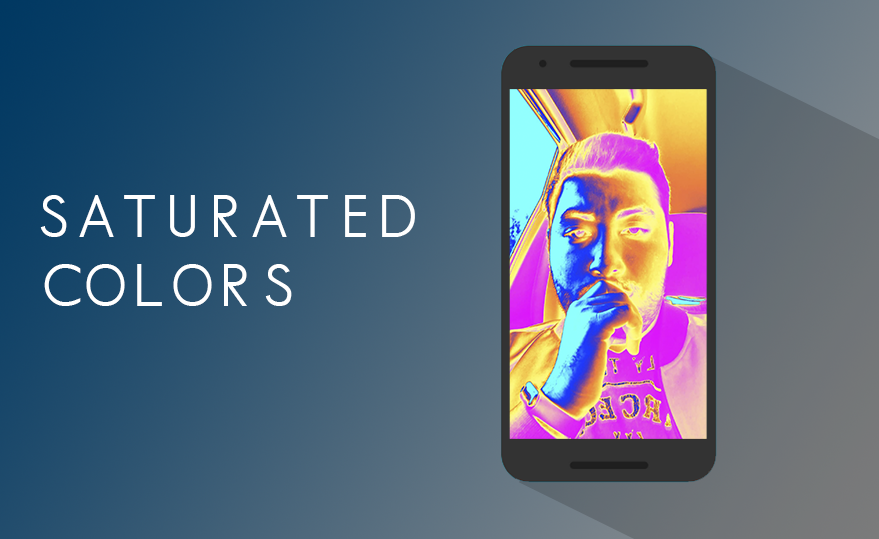
SATURATED COLORS
With this filter, the user can experience the saturation of colors in the video image. This is possible thanks
to the use of LUTs that can be implemented in AR effects.
TRY IT
IPNet
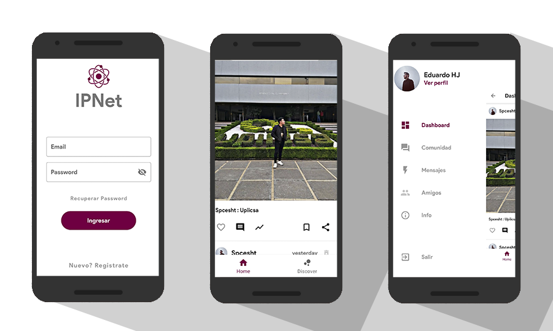
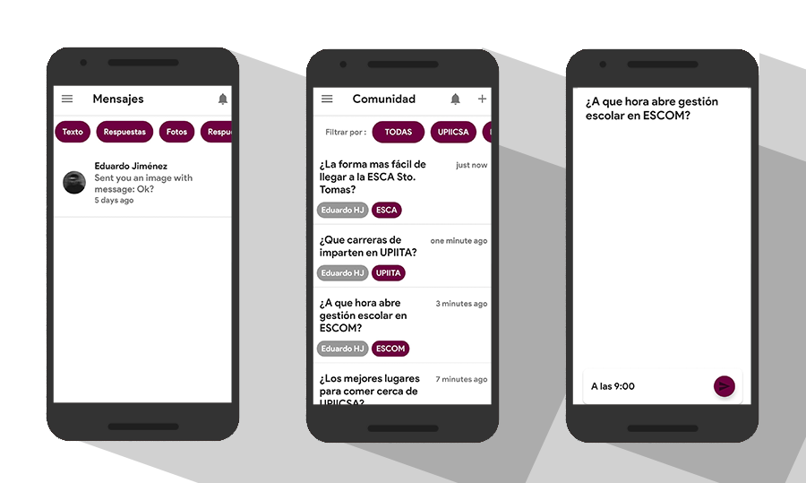
The social network thought for the student community!
Find friends, upload your best photos, send messages and ask your questions to the whole student community.
IPNet is a social network thought to help the student community of the ipn, where they can ask questions to the whole community and so can find the best answer, as well as to be able to share your best moments in the institution and receive feedback from your friends and the whole community, all of this comes with an intuitive and friendly user interface.
Fully programmed in java and using firebase as the database for all social network information processing.
Download
UPIICSA EATS
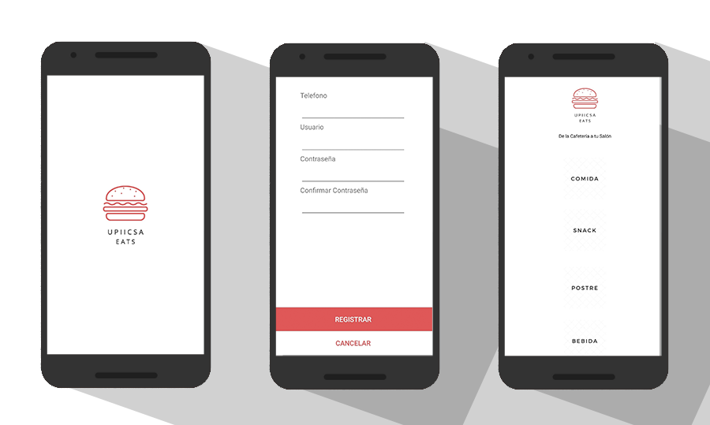
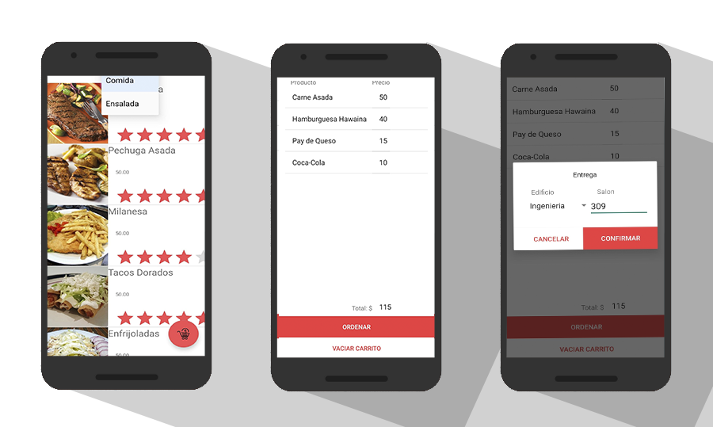
The final solution for students who do not have time to buy their food.
Do you have no free time or don't have time to buy something to eat and you have 5 hours in a classroom? Do not worry, from the comfort of your seat in the classroom you will be able to ask for anything you need and it will come to the door of your classroom in a little time!
UPIICSA Eats is a designed application for the community of UPIICSA who doesn't have a lot of time to go to buy food, or hates having to be in line to buy something. With this application, the user will have a wide variety of products offered at the school, and with a simple click, order and it will come to the classroom door without having to lose time.
Fully programmed in java and using firebase as a database for all the information processing of the application.
Download
YOUHOO
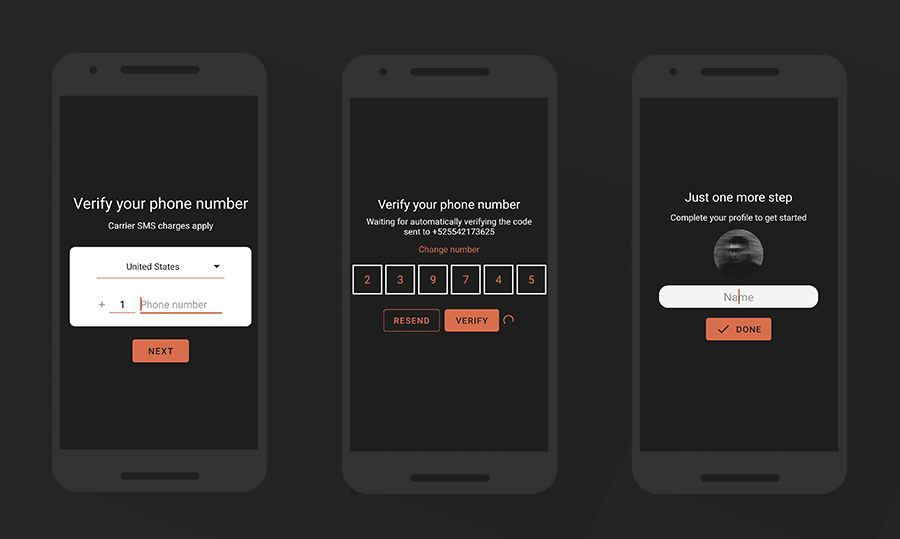
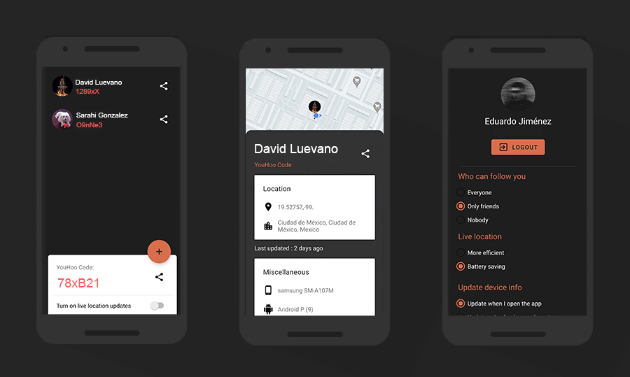
Keep your friends and family close and safe!
Follow your contacts at all times with this application that lets you know their location at all time!
Youhoo is an application designed for the security of your friends and family, you just need to add a new contact and they accept your friend request, and you always be sure of knowing the location they are in.
With this application you can choose with whom and when sharing your location in real time, it is efficient for when you go to a party and you want your family and friends to be aware of your location at all times, or when it is too late and you take a taxi, your family and friends will know in your location at all time.
Fully programmed in java and using firebase as a database for all the information processing of the application.
Download
CORONA NOW
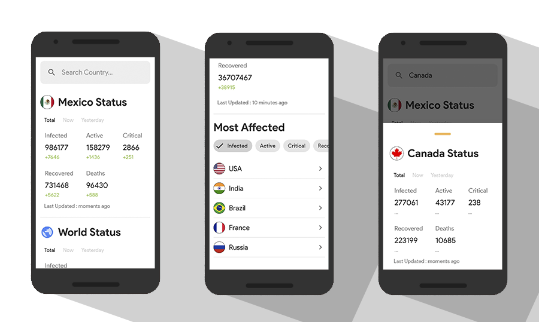
Stay protected and informed with corona now!
Real-time update of the status of the pandemic around the world!
With this application you will be able to follow in real time the update of infections, possible cases and recoveries from more than 150 countries, as well as inform yourself of which one has the highest number of contagions, in which they are recovering, etc.
Fully programmed in java and using google services.
Download
UPIICSANSWERS
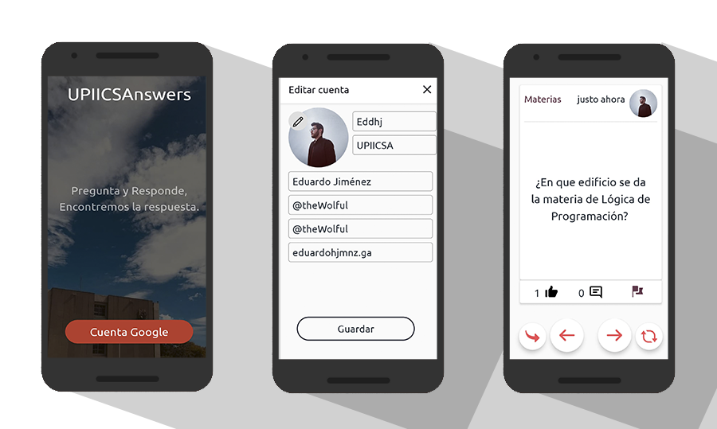
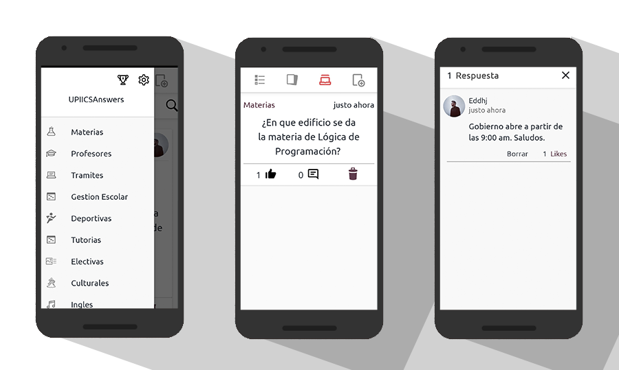
Asking is wise.
With UPIICSAnswers you can clarify all your doubts that will be answered by students of the UPIICSA student community.
UPIICSAnswers is a designed application to help new and old students from the UPIICSA to answer all its doubts, such as knowing more about teachers, subjects, administrative services, the degree process, etc.
With this tool seek student union and brotherhood by helping STUDENTS by responding to their doubts and facilitating their stay in school.
Fully scheduled in java and using firebase as the database for all application information processing.
Download
CLASSTOOL
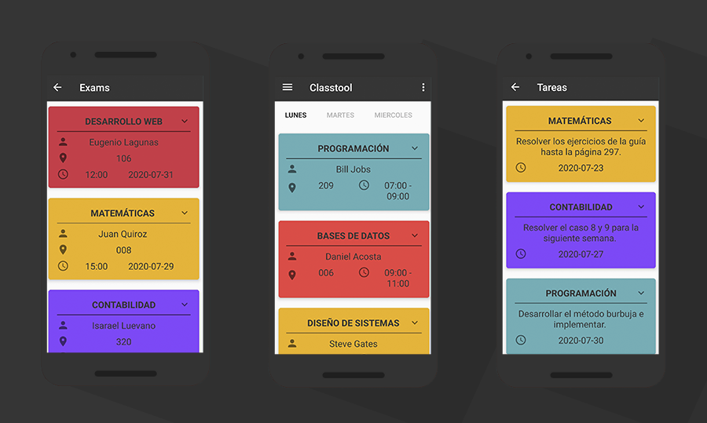
Everything you need to be productive in the classroom and out!
With classtool you could have your tasks, teachers, exams and your schedule in order!
Add your class schedule and receive notifications each you have a class, add your exams and homeworks and receive reminders to do it, add your teachers
Classtool is a tool designed to facilitate work to the students they will be able to have their schedule, add reminders, teacher information, exam and task reminders, etc.
Fully scheduled in java and using sqlite as the database for all application information processing .
Download
WIFI POCKET
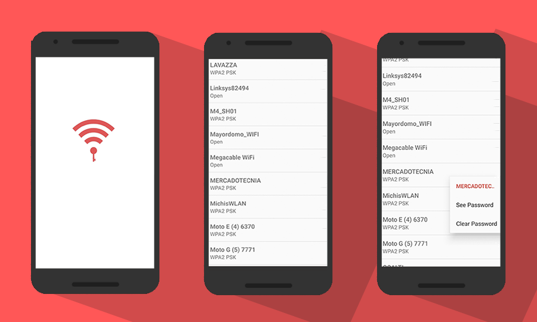
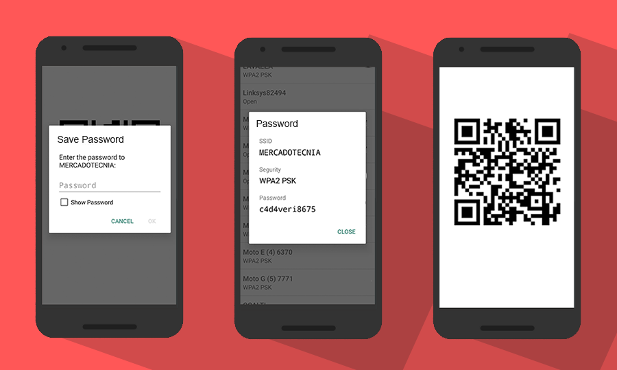
All your wifi passwords in one place!
Save and share your passwords easily, with wifi pocket save and share all your wifi passwords with your friends.
With wifi pocket you can save all your wifi passwords and share them with your friends by means of qr code!
Wifi pocket is a tool with a design; or minimalist that will help you keep all your passwords; wifi and share them with friends and family members through a qr code, if you are a user root the application will automatically remove your passwords; it will store them, if you are not, in the same way you can save your passwords, but saving them manually.
To have your passwords, it will be necessary for you to select the network and add the password manually, then you can share it with your friends.
Fully programmed in java and using sqlite as a database for all information processing of the application.
Download
STLKR
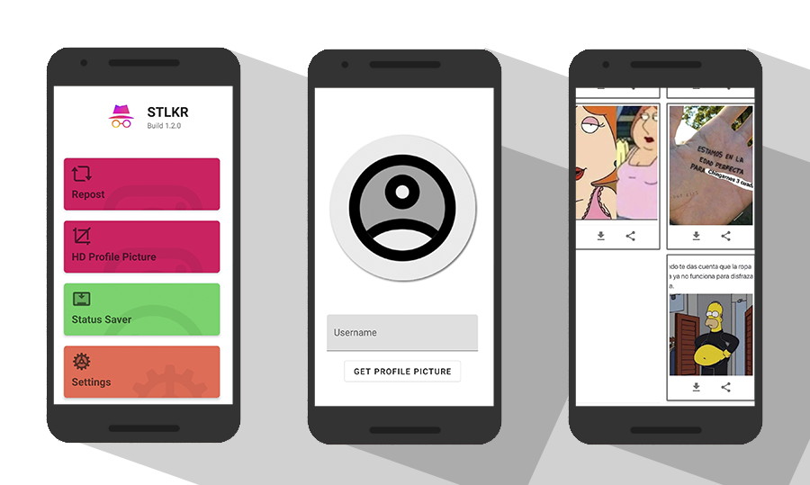
Download states, profile photos, and publications anonymously!
STLKR is the simple tool that will help you download the profile photo of any user of instagram, and download all the states from your whatsapp contacts, download instagram post, everything anonymous, easy and secure!
Completely programmed in java and using sqlite as the database for all the processing of application information.
Download
QReader +

Generate qr codes of everything you want in an easy and quick way with this app!
QReader + allows you to read qr codes and also allows you to generate them with a very easy and intuitiful to use interface.
QReader + is an app designed so that the user can scan all kinds of qr codes and also so that he can create his own qr codes in a quick and easy way with an intuitiful and minimalist interface.
Completely programmed java and using sqlite as a database for all the information processing of the application.
Download
RGB
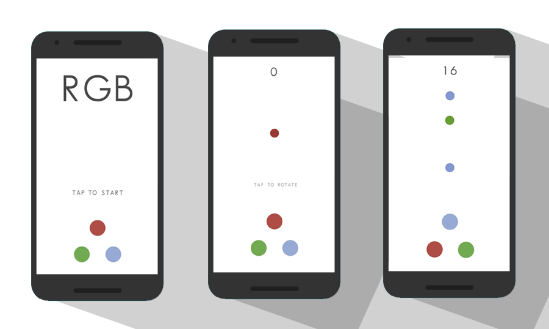
How far can you go in RGB the new game of mental agility?
Catch all the points according to their color while each time their speed increases!
Test your mental agility catching all the points that are going down faster and faster!
RGB is a simple but addictive game, your mission is to catch all the points according to their color, but you must have a lot of mental agility since each second the speed and difficulty are increased!
Download
DUAL
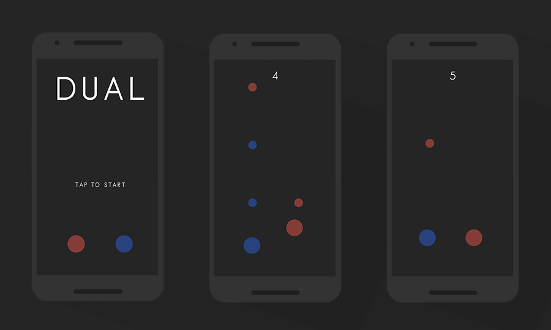
How fast are your reflexes? Put them to pass without losing concentration in this fun game!
Catch the dots according to their color, do not miss any!
DUAL is a simple but addictive game, the points will go down and your mission will be to catch them according to the corresponding color, but be careful that each time the speed and difficulty increases every second you play!
Test your reflexes and how fast you are mentally with this new game of mental agility!
Download
GOOSEBUMPS
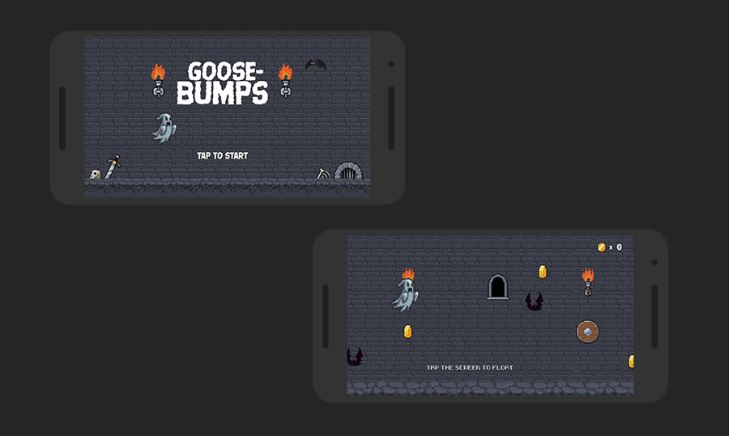
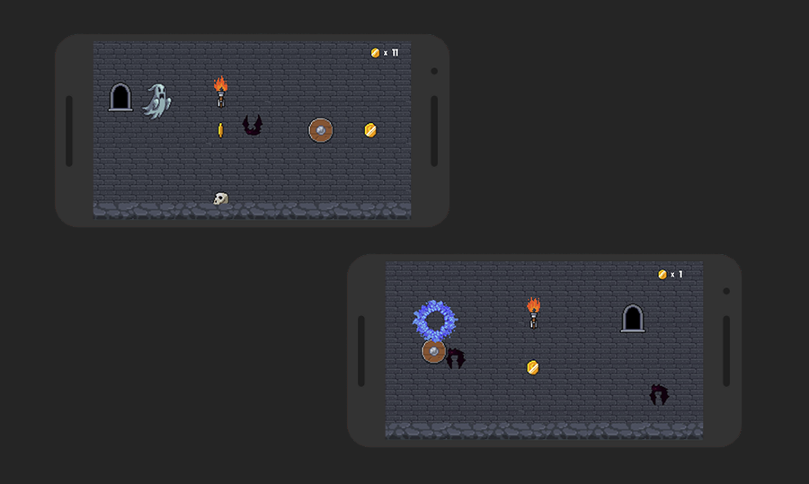
Are you afraid of ghosts? In this game you are one!
Watch out for bats, don't float too low or too high or you could lose!
Goosebumps is a simple but fun game in which your mission will be to escape from the haunted castle, avoiding touching the floor and the ceiling, as well as vetitating to collide with the bats that come flying towards you.
Accumulate the largest amount of coins in your attempt to escape and be careful as each time the speed and difficulty have increased!
Download
Boards
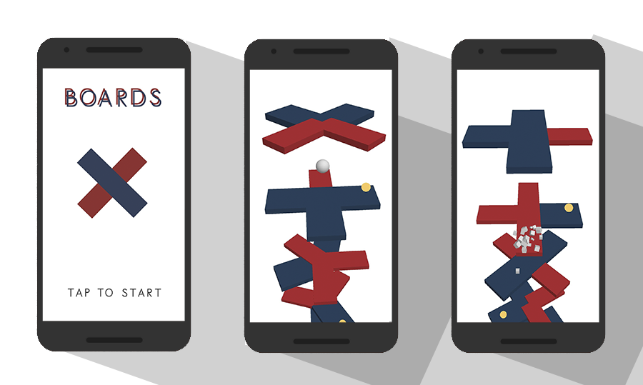
How low can you get without losing focus in this new game of mental agility?
Keep bouncing the ball and don't let it touch any red board or you will lose!
BOARDS is a simple game but Addictive, the ball does not stop bouncing and your mission is to get it as low as possible, only jumping on the blue tables, if you touch the red ones, you lose.
Download
SPIRAL
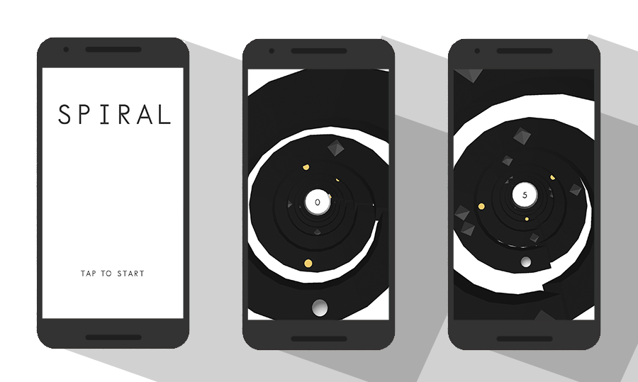
How fast are you mentally?
Try not to get dizzy and lose your mind in the new game of mental agility!
Add points the further you go down the spiral, avoid enemies and try not to get dizzy and lose concentration.
SPIRAL is a simple but addictive game, your mission is to get as low as possible while adding points and jumping enemies, but each time the speed and difficulty will increase, so try not to get dizzy and lose concentration!
Download
NON STOP UP
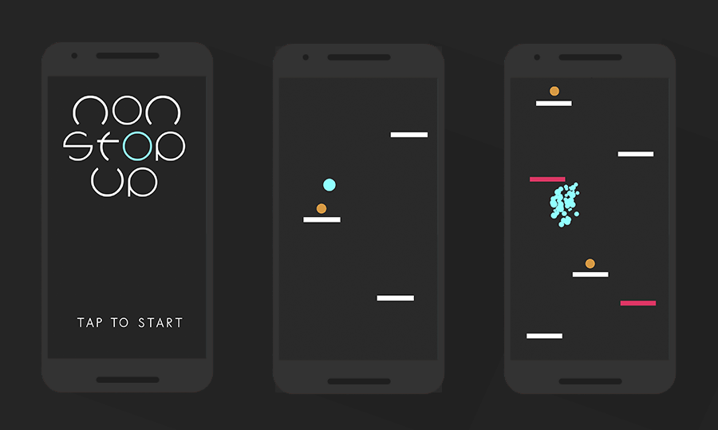
How far can you go in Non Stop Up?
Defy gravity! Don't let the ball go up!
The classic game of climbing platforms, now in reverse!
Don't stop going down on the platforms, collect all the points you can and avoid the red platforms or it will be your downfall!
Non Stop Stop is a simple game, your mission is to prevent the small ball from reaching the top, for this you must go down with the help of the platforms, avoid the red platforms since they also affect you.
Download
FREE TAXI
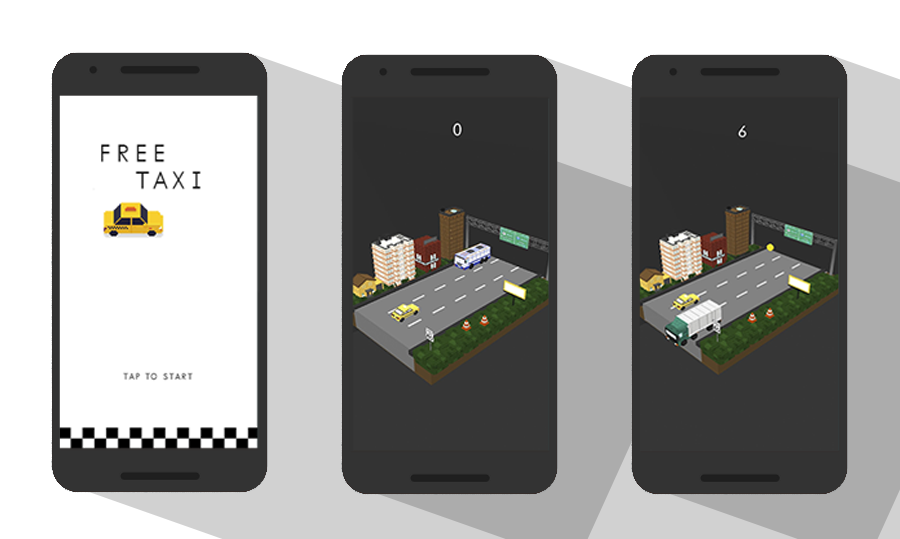
How fast are your reflexes? Put them to the test aboard this taxi!
Free Taxi is a simple but fun game in which your mission will be to avoid crashing into the other cars coming towards you from the opposite direction while collecting as many coins as you can. All this while the speed of the taxi increases more and more.
Will you be fast enough to collect as many coins as possible without crashing in the road?
Download
{kind=link}
{kind=link}
{kind=link}
{kind=link}
{kind=link}
{kind=link}
{kind=link}
{kind=link}
{kind=link}
{kind=link}
{kind=link}
{kind=link}
{kind=link}
{kind=link}
{kind=link}
{kind=link}
{kind=link}
{kind=link}
{kind=link}
{kind=link}
{kind=link}